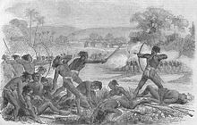

The region has been inhabited since the Mesolithic-Chalcolithic period, as shown by several ancient cave paintings.[20][21][22] Stone tools have been discovered from Chota Nagpur plateau region which is from Mesolithic and Neolithic period.[20] There are ancient cave paintings in Isko, Hazaribagh district which are from Meso-chalcolithic period (9000–5000 BCE).[21] During 2nd millennium BCE the use of Copper tools spread in Chota Nagpur Plateau and these find complex are known as the Copper Hoard Culture.[23] In Kabra-Kala mound at the confluence of Son and North Koel rivers in Palamu district various antiquities and art objects have found which are from Neolithic to the medieval period and the pot-sherds of Redware, black and red ware, black ware, black slipped ware and NBP ware are from Chalcolithic to the late medieval period.[24] Several iron slags, microliths, and potsherds have been discovered from Singhbhum district which are from 1400 BCE according to carbon dating age.[22] The region was ruled by many empires and dynasties including Nanda, Maurya and Gupta during ancient period. In Mahabharata, the region was referred as Kark Khand due to its location near Tropic of Cancer.[17] During the age of Mahajanpadas around 500 BCE, Jharkhand state was a part of Magadha and Anga.[citation needed] In the Mauryan period, this region was ruled by a number of states, which were collectively known as the Atavika (forest) states. These states were subdued and were forced to accept the hegemony of the Maurya empire during Ashoka's reign (c. 232 BCE). In ancient site of Saridkel, burnt bricks houses, red ware pottery, copper tools, coins and iron tools found which are belongs to early centuries CE.[25] The Brahmi Inscription have been found in Khunti district which are from 3rd century BCE.[26] Samudragupta, while marching through the present-day Chotanagpur region (North and South), directed the first attack against the kingdom of Dakshina Kosala in the Mahanadi valley
In the 7th century, Chinese traveller Xuanzang passed through the region. He described the kingdom as Karnasuvarna, with Shashanka as its ruler. To the north of Karn-Suberna was Magadha, Champa was in east, Mahendra in the west and Orissa in the south.[28] During medieval period, the region ruled by Nagvanshi, Pala, Khayaravala, Ramgarh Raj and Chero ruler.[29][30] A Buddhist monastery has been found in Hazaribagh which was built during the Pala rule in 10th century.[31] Bhim Karn was Nagvanshi king during medieval period. He defeated Raksel dynasty of Surguja when they Invaded the reign with cavalry
The Mughal influence reached Palamu during the reign of Emperor Akbar when it was conquered by Rajput Raja Mansingh in 1574. Several invasion took place during Mughal rule.[33] During the reign of Nagvanshi King Madhu Singh, Akbar' general invaded Khukhra. Also there was invasion during region of Durjan Shah.[34] King Ram Shah ruled Navratangarh from 1640 to 1663. He built Kapilnath Temple in 1643. He succeeded by his son Raghunath Shah. Thakur Ani Nath Shahdeo bulit Jagannath temple of Ranchi in 1691.[35] The King Medini Ray, ruled from 1658 to 1674 in Palamau.[36] His rule extended to areas in South Gaya and Hazaribagh. He attacked Navratangarh and defeated the Nagvanshi Maharaja of Chhotanagpur.[37] The Chero rule in Palamu region lasted until 19th CE, until internal conflict between various factions weakened the Cheros and they were defeated by the East India Company. Later Palamu estate was sold by the British.
During 18th century, region under Kings of Chero dynasty, Nagvanshi dynasty, Ramgarh and Kharagdiha became parts of territories of East India Company. Ramgarh Raj along with estates of other chiefs in the regions was permanently settled as Zamindari estate. The Kharagdiha Rajas were settled as Rajas of Raj Dhanwar in 1809, and the Kharagdiha gadis were separately settled as zamindari estates. Some of the notable Kharagdiha Zamindari estates were Koderma, Gadi Palganj and Ledo Gadi.[39] The Princely states in Chota Nagpur Plateau, came within the sphere of influence of the Maratha Empire, but they became tributary states of British East India Company as a result of the Anglo-Maratha Wars known as Chota Nagpur Tributary States

Thakur Vishwanath Shahdeo and Pandey Ganpat Rai rebelled against the British East India Company in the 1857 rebellion. In the Battle of Chatra, conflict took place between the rebels and the East India company.[44][45] Tikait Umrao Singh, Sheikh Bhikhari, Nadir Ali and Jai Mangal Singh played pivotal role in the Indian Rebellion of 1857.[46] The brothers Nilambar and Pitambar were chiefs of Bhogta clan of the Kharwar tribe, who held ancestral jagirs with many Chero Jagirdars led revolt against British East India company.[33] After the Indian Rebellion of 1857, the rule of the British East India Company was transferred to the Crown in the person of Queen Victoria,[47] who, in 1876, was proclaimed Empress of India. The Cheros and Kharwars again rebelled against the British in 1882 but the attack was repulsed.[48] Then Birsa Munda revolt,[49] broke out in 1895 and lasted until 1900. The revolt though mainly concentrated in the Munda belt of Khunti, Tamar, Sarwada and Bandgaon. In October 1905, the exercise of British influence over the predominantly Hindi-speaking states of Chang Bhakar, Jashpur, Koriya, Surguja, and Udaipur was transferred from the Bengal government to that of the Central Provinces, while the two Oriya-speaking states of Gangpur and Bonai were attached to the Orissa Tributary States, leaving only Kharsawan and Saraikela answerable to the Bengal governor.
The dynamics of resources and the politics of development still influence the socio-economic structures in Jharkhand, which was carved out of the relatively underdeveloped southern part of Bihar. According to the 1991 census, the state has a population of over 20 million out of which 28% is tribal while 12% of the people belong to scheduled castes. Jharkhand has 24 districts, 260 blocks, and 32,620 villages out of which only 45% have access to electricity while only 8,484 are connected by roads. Jharkhand is the leading producer of mineral wealth in the country after Chhattisgarh state, endowed as it is with a vast variety of minerals like iron ore, coal, copper ore, mica, bauxite, graphite, limestone, and uranium. Jharkhand is also known for its vast forest resources.